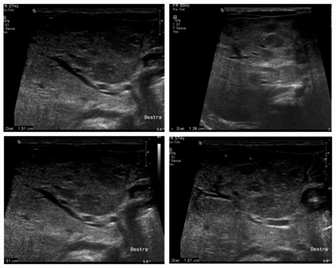
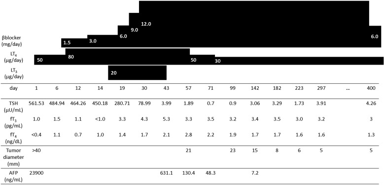
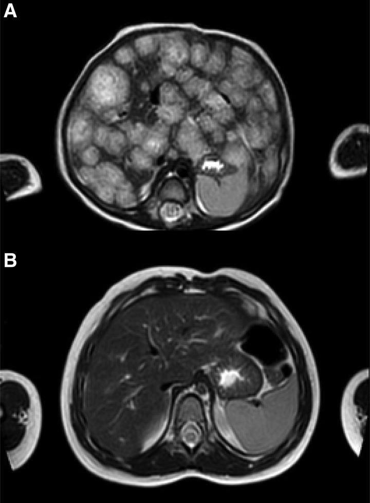

689 — Suy giáp tiêu thụ do u mạch máu ở trẻ / Consumptive hypothyroidism in infantile hemangioma
Tags: pattern:khoi-gan-nhi pattern:suy-giap vung:gan vung:tuyen-giap protocol:TSH-fT4-rT3
Mức chắc chắn (certainty): tổng hợp y văn (literature synthesis) — số liệu lấy từ 3 loạt ca/bài tổng quan đọc trực tiếp (PMC12186321, PMC10158424, PMC6356094) và các ca bổ sung (PMC6083462, PMC13225080); chưa có thử nghiệm ngẫu nhiên riêng cho ngưỡng liều LT4 ở suy giáp tiêu thụ.
1. Tổng quan bệnh học – cơ chế hình ảnh
- Suy giáp tiêu thụ (consumptive hypothyroidism, CH) là hội chứng cận ung thư (paraneoplastic) do mô u mạch máu tăng biểu hiện men khử iod loại 3 (type 3 iodothyronine deiodinase, D3/DIO3). D3 khử vòng trong: T4 → reverse T3 (rT3) và T3 → 3,3′-diiodothyronine (T2) — cả hai đều không có hoạt tính sinh học. Kết quả là hormone bị “đốt” ngoại vi nhanh hơn tuyến giáp sản xuất, dù tuyến giáp lành và trục tuyến yên–giáp hoạt động bình thường.
- TẠI SAO u càng lớn càng nặng: D3 được cảm ứng bởi bFGF và VEGF trong nội mô u; hoạt tính D3 tăng song song với thể tích u chứ không phụ thuộc vị trí. Vì vậy CH hay gặp ở thể lan tỏa (diffuse) thay thế gần toàn bộ nhu mô gan, và lui khi u co lại dưới propranolol.
- Tần suất – ngưỡng định lượng: CH gặp ở khoảng 5,3% các ca u mạch máu gan nhũ nhi (infantile hepatic hemangioma, IHH); trong loạt IHH thể lan tỏa, > 70% có suy giáp và 11 ca cần điều trị. Tổng quan 64 ca (2000–2023) cho thấy TSH lúc chẩn đoán trung bình 145,5 mU/L (khoảng 15–475), tử vong 7/64 (10,93%).
- TẠI SAO xét nghiệm sàng lọc sơ sinh có thể bình thường: u chưa đủ lớn lúc sinh; D3 tăng dần trong pha tăng sinh sau sinh. Trong 43 ca có dữ liệu, sàng lọc sơ sinh bình thường ở 13 ca, chỉ 7 ca phát hiện qua sàng lọc; tuổi chẩn đoán trung bình 1 tháng (trung vị 2 tháng). Đây là cạm bẫy số 1: sàng lọc sơ sinh bình thường không loại trừ CH.
- TẠI SAO liều LT4 cao hơn suy giáp bẩm sinh: trẻ suy giáp bẩm sinh thường cần 10–15 µg/kg/ngày, nhưng CH cần bù phần hormone bị D3 phá hủy liên tục. Trong 64 ca, 52/56 (92,85%) dùng levothyroxine (LT4), liều tối đa trung bình 24,04 µg/kg/ngày (khoảng 1–110); 15/52 (28,8%) phải thêm liothyronine (LT3).
- TẠI SAO phải thêm LT3: khi LT4 đã kéo fT4 về bình thường nhưng fT3 vẫn rất thấp (T3 cũng bị D3 giáng hóa), tăng LT4 đơn thuần chỉ làm tăng rT3. Ca minh họa: LT4 13 µg/kg/ngày làm fT4 lên 1,0 ng/dL nhưng fT3 vẫn < 1,0 pg/mL, phải thêm LT3 3,3 µg/kg/ngày trong 4 tuần.
- Hình ảnh gan – TẠI SAO: IHH là u nội mô GLUT-1 dương, giàu mạch, nhiều hồ máu. Siêu âm: nhiều ổ giảm âm, bờ rõ, có thể “giả nốt” trên nền gan không đồng nhất. MRI: ổ tăng tín hiệu T2 do nhiều nước/hồ máu, trung tâm giảm tín hiệu do xơ/huyết khối/calci; sau tiêm ngấm viền nốt rồi đầy dần vào trung tâm (centripetal) — khác kiểu ngấm toàn bộ nhanh của hepatoblastoma. Không cần sinh thiết gan vì nguy cơ chảy máu; chẩn đoán CH dựa vào TSH cao + rT3 cao + đáp ứng kém với LT4 thường + giảm khi u co.

Siêu âm bụng lúc chẩn đoán: gan to, nhiều ổ giảm âm–đồng âm bờ rõ, đường kính trung bình 15 mm. Nguồn: Bettini I và cs., Ital J Pediatr 2025;51:198 (PMC12186321), Fig. 2, CC BY 4.0.2. Mẫu hình + chẩn đoán phân biệt theo vị trí (gamut)
Mẫu hình gợi ý: nhũ nhi 1–6 tháng, gan to + bú kém/chậm tăng cân + nhiều u mạch máu da (đôi khi 0–1 tổn thương da), kèm nhịp nhanh, suy tim cung lượng cao hoặc xét nghiệm TSH rất cao, fT4 thấp/bình thường, fT3 thấp. Trong loạt 64 ca, 48,43% là nữ, tuổi trung vị 2 tháng.
Gamut theo “TSH cao + fT4 thấp hoặc bình thường” ở nhũ nhi:
- Tại gan (có khối gan): CH do IHH thể lan tỏa/nhiều ổ; CH do u mạch máu gan khu trú lớn; ít gặp hơn là u mạch máu ngoài gan (da, tuyến mang tai) hoặc u nguyên bào cơ vân ác tính của thận (malignant rhabdoid tumor) — tất cả đều biểu hiện D3.
- Tại tuyến giáp (không có khối gan): suy giáp bẩm sinh do loạn sản/bất sản tuyến giáp hoặc rối loạn tổng hợp hormone (dyshormonogenesis); kháng TSH (TSH resistance, đột biến TSHR); viêm giáp tự miễn rất hiếm ở tuổi này.
- Bối cảnh bệnh nặng: hội chứng bệnh không do tuyến giáp (non-thyroidal illness syndrome, NTIS) — T3 thấp, TSH thấp/bình thường, rT3 cao; không phải suy giáp nguyên phát.
- Thuốc/iod/assay: quá tải iod, amiodarone, tương tác xét nghiệm (macro-TSH, kháng thể heterophile) — TSH cao giả hoặc thật nhưng không có khối gan.
Gamut khối gan ở nhũ nhi (phải loại trừ trước khi gọi IHH): hepatoblastoma (AFP thường rất cao, tuổi < 3 tuổi), u mô đệm lành (mesenchymal hamartoma — nhiều nang vách), sarcoma phôi gan chưa biệt hóa (UESL — khối đặc giả nang), di căn neuroblastoma, áp-xe gan. AFP tăng không loại trừ IHH: các ca ghi nhận AFP 13.923 ng/mL, 23.900 ng/mL và 470 ng/mL; tỷ lệ AFP-L3 chỉ 1,9% giúp nghiêng về IHH.
 MRI T2 axial: gan to, vô số ổ tăng tín hiệu T2, đường kính tối đa 20 mm, gần như thay thế toàn bộ nhu mô gan — thể lan tỏa. Nguồn: Bettini I và cs., Ital J Pediatr 2025;51:198 (PMC12186321), Fig. 3, CC BY 4.0.
MRI T2 axial: gan to, vô số ổ tăng tín hiệu T2, đường kính tối đa 20 mm, gần như thay thế toàn bộ nhu mô gan — thể lan tỏa. Nguồn: Bettini I và cs., Ital J Pediatr 2025;51:198 (PMC12186321), Fig. 3, CC BY 4.0.
3. Bảng so sánh phân biệt (ma trận đối chiếu)
| Thực thể (entity) | Hình ảnh điển hình | Chốt vào (rule-in) | Chốt loại (rule-out) | Gợi ý xác nhận |
|---|---|---|---|---|
| CH do IHH | Gan to, nhiều ổ giảm âm/T2 sáng; ngấm viền nốt rồi đầy dần; nhiều u mạch máu da | TSH cao + rT3 cao + fT3 thấp + khối gan đa ổ + đáp ứng kém với LT4 10–15 µg/kg/ngày | TSH bình thường hoàn toàn, không có khối gan, rT3 bình thường → tìm nguyên nhân khác | TSH, fT4, fT3, rT3; siêu âm/MRI gan; theo dõi TSH sau 2–4 tuần điều trị |
| CH do u mạch máu ngoài gan | U da/tuyến mang tai lớn; không có khối gan | U mạch máu + TSH cao + rT3 cao, hết khi u thoái triển | Không thấy u mạch máu nào → suy giáp bẩm sinh/NTIS | Khám da toàn thân, siêu âm phần mềm/tuyến mang tai |
| Suy giáp bẩm sinh | Tuyến giáp nhỏ/không thấy trên siêu âm; không có khối gan | Sàng lọc sơ sinh dương tính hoặc TSH cao ngay tuần đầu + fT4 thấp | Sàng lọc bình thường + khối gan lớn + rT3 cao → nghĩ CH | TSH/fT4, siêu âm tuyến giáp, xạ hình nếu cần |
| Kháng TSH (TSHR) | Tuyến giáp bình thường, không khối gan | TSH cao nhẹ, fT4 bình thường, gia đình có người tương tự | TSH rất cao + fT3 thấp + khối gan → không phải kháng TSH đơn thuần | Giải trình tự TSHR, theo dõi tăng trưởng |
| NTIS | Trẻ bệnh nặng, không khối gan | T3 thấp, TSH thấp/bình thường, rT3 cao, hồi phục khi hết bệnh | TSH rất cao + fT4 thấp kéo dài + khối gan → không phải NTIS | Đánh giá bệnh nền, lặp xét nghiệm sau hồi phục |
| Hepatoblastoma | Khối gan đặc, có thể vôi hóa; AFP rất cao | AFP tăng theo tuổi + AFP-L3 cao + khối đặc | AFP-L3 thấp (1,9%) + nhiều ổ mạch + TSH cao → nghiêng IHH | AFP, AFP-L3, MRI gan, sinh thiết chọn lọc |
| U mô đệm lành / UESL | Nhiều nang vách hoặc khối đặc giả nang | < 2 tuổi + nhiều vách + ít mạch (u mô đệm); khối đặc + 19q13.4/C19MC (UESL) | Nhiều ổ tăng mạch + TSH cao + u da → IHH | MRI, mô bệnh học khi cần |
4. Protocol chụp + hệ phân độ/điểm chuẩn hóa
- Khi nào tầm soát gan: hướng dẫn hiện hành khuyến cáo siêu âm bụng khi có ≥ 5 u mạch máu da; tuy nhiên IHH có thể xuất hiện với 0–1 tổn thương da, nên siêu âm bụng khi có bất kỳ u mạch máu da + dấu hiệu toàn thân (gan to, bú kém, chậm tăng cân, suy tim, thiếu máu).
- Bộ xét nghiệm lúc chẩn đoán: TSH, fT4, fT3, rT3 (nếu có); siêu âm tuyến giáp + anti-TPO/anti-Tg để loại trừ viêm giáp; AFP và AFP-L3; công thức máu, đông máu (Kasabach–Merritt), siêu âm tim tìm shunt/suy tim; đánh giá khoang bụng nếu gan quá lớn.
- Chẩn đoán CH: không cần sinh thiết gan. Chốt khi TSH cao + rT3 cao + fT4 thấp/bình thường + fT3 thấp, kèm khối gan và đáp ứng kém với liều LT4 thông thường; rT3 không có sẵn thì dựa vào TSH + khối gan + đáp ứng điều trị.
- Điều trị u: propranolol 1 mg/kg/ngày, tăng lên 2 mg/kg/ngày sau 5 ngày, có thể 3 mg/kg/ngày; theo dõi nhịp tim, huyết áp, đường huyết. U co là yếu tố quyết định CH lui.
- Điều trị CH: khởi đầu LT4 10–15 µg/kg/ngày, tăng dần theo TSH/fT4 (liều tối đa trung bình trong y văn 24,04 µg/kg/ngày, cá biệt 110 µg/kg/ngày); nếu fT4 đã bình thường mà fT3 vẫn thấp, thêm LT3 3,3 µg/kg/ngày trong 4 tuần rồi đánh giá lại. Không ngừng LT4 khi u chưa thoái triển.
- Theo dõi: xét nghiệm tuyến giáp lúc chẩn đoán, sau 14 ngày và 30 ngày (mốc dùng trong các ca), sau đó mỗi 2–4 tuần khi đang chỉnh liều/đang tăng sinh, rồi mỗi 1–3 tháng đến khi u thoái triển; siêu âm gan hàng tháng đến khi ổn định, sau đó mỗi 3 tháng đến khi thoái triển hoàn toàn. Không có lịch chuẩn hóa duy nhất — phải cá thể hóa theo thể tích u và tốc độ tăng TSH.
- Ngừng thuốc: giảm LT4 từ từ khi TSH/fT4 ổn định và u đã thoái triển; tiếp tục theo dõi sau ngừng vì suy giáp có thể tái phát cùng lúc u to lại (một ca tái phát lúc 32 tháng sau khi ngừng hormone, kèm hai nốt gan to lên).
flowchart TD
A[Nhũ nhi gan to + u mạch máu da] --> B[Siêu âm gan + TSH/fT4/fT3/rT3]
B --> C{TSH cao + khối gan đa ổ?}
C -->|Không| D[Loại trừ suy giáp bẩm sinh, NTIS, kháng TSH]
C -->|Có| E[CH do IHH: propranolol + LT4 10–15 µg/kg/ngày]
E --> F[TSH/fT4 sau 14 và 30 ngày]
F --> G{fT3 còn thấp sau khi fT4 bình thường?}
G -->|Có| H[Thêm LT3 3,3 µg/kg/ngày × 4 tuần]
G -->|Không| I[Tiếp tục LT4, giảm liều theo TSH]
H --> J[Theo dõi 2–4 tuần/lần đến khi u thoái triển]
I --> J
J --> K{U đã thoái triển + TSH bình thường?}
K -->|Có| L[Giảm/ngừng LT4, theo dõi tái phát]
K -->|Không| J
5. Biến thể bình thường và cạm bẫy
- Sàng lọc sơ sinh bình thường không loại trừ CH — u tăng sinh sau sinh; phải đo lại TSH/fT4 khi có khối gan hoặc nhiều u da.
- AFP tăng sinh lý ở nhũ nhi và IHH cũng làm AFP tăng (13.923; 23.900; 470 ng/mL). Đừng gọi hepatoblastoma chỉ vì AFP cao; xem AFP-L3 (1,9% trong ca IHH) và hình thái mạch.
- Siêu âm gan “giả nốt” trên nền gan không đồng nhất dễ bị đọc là di căn/áp-xe; MRI T2 + ngấm viền nốt giúp định hướng.
- Tuyến giáp bình thường trên siêu âm không loại trừ CH (trục tuyến giáp lành, bệnh ở ngoại vi).
- rT3 không có sẵn: đừng chờ rT3 mới điều trị khi TSH rất cao + khối gan + fT3 thấp; điều trị thử và đánh giá đáp ứng.
- Quá liều LT4: fT4 có thể vọt lên 29,6 pmol/L sau 11 ngày với liều 9,6 µg/kg/ngày — theo dõi fT4, tránh chỉnh liều theo TSH đơn thuần.
- LT3 kéo dài có thể gây nhiễm độc giáp; dùng liệu trình ngắn (4 tuần) và giảm khi fT3 bình thường.
- Bỏ sót u ngoài gan: u mạch máu tuyến mang tai/da đơn thuần vẫn gây CH; khám da và vùng đầu–cổ.
- Ngừng thuốc quá sớm: CH có thể tái phát khi u còn hoạt tính; theo dõi TSH sau ngừng ít nhất vài tháng.
6. Tự lượng giá — Blind Quiz
Ca 1 — Bé trai 2 tháng, bú kém, gan to, 10 u mạch máu da < 5 mm. Đọc MRI T2.
- Gợi ý lâm sàng: sinh 36 tuần, 2.120 g; gan to; TSH 33,05 mU/L, fT4 16,8 pg/mL, fT3 3,7 pg/mL, rT3 2,0 ng/mL; AFP 13.923 ng/mL.
- Câu hỏi: Mô tả dấu hiệu chính? Nghĩ đến cơ chế nào? Xét nghiệm nào chốt?
Bấm để hiện đáp án (findings + chẩn đoán)
- Dấu hiệu: gan to, vô số ổ tăng tín hiệu T2, đường kính tối đa 20 mm, gần như thay thế toàn bộ nhu mô — IHH thể lan tỏa.
- Chẩn đoán: suy giáp tiêu thụ do IHH — TSH cao, rT3 2,0 ng/mL (bình thường 0,5–0,95), fT3 thấp; D3 trong u chuyển T4→rT3 và T3→T2.
- Xử trí: propranolol 1 → 2 mg/kg/ngày; TSH về 5 sau 14 ngày và 1,88 sau 30 ngày, rT3 0,67 — không cần LT4 vì u đáp ứng nhanh.
- Nguồn: Bettini I và cs., Ital J Pediatr 2025;51:198 (PMC12186321), Fig. 3, CC BY 4.0.
Ca 2 — Bé trai 4 tháng, gan to 5 cm dưới bờ sườn, TSH 561,5 µIU/mL, fT4 < 0,7 ng/dL, fT3 1,0 pg/mL. Đọc biểu đồ điều trị.

- Gợi ý: AFP 23.900 ng/mL, AFP-L3 1,9%; propranolol 0,25 → 2 mg/kg/ngày; LT4 50 → 80 µg/ngày.
- Câu hỏi: Vì sao fT4 lên bình thường mà fT3 vẫn thấp? Làm gì tiếp theo?
Bấm để hiện đáp án (findings + chẩn đoán)
- Dấu hiệu: dưới LT4 13 µg/kg/ngày, fT4 lên 1,0 ng/dL nhưng fT3 vẫn < 1,0 pg/mL — vì D3 giáng hóa cả T3, không chỉ T4.
- Xử trí: thêm LT3 20 µg/ngày (3,3 µg/kg/ngày) trong 4 tuần, TSH chuẩn hóa sau khoảng 1 tháng; propranolol ngừng lúc 1 tuổi 1 tháng, phát triển tâm vận động bình thường lúc 1 tuổi 5 tháng.
- Bài học: khi fT4 đã bình thường mà fT3 còn thấp, thêm LT3 thay vì tiếp tục tăng LT4.
- Nguồn: Osada A và cs., Clin Pediatr Endocrinol 2019;28:9–14 (PMC6356094), Fig. 3, CC BY-NC-ND 4.0 (giữ nguyên, không chỉnh sửa).
Ca 3 — Bé gái 3 tháng, gan to, TSH 58,7 mIU/L; MRI trước và sau 19 tháng điều trị.

- Gợi ý: LT4 10 µg/kg/ngày, propranolol 1–3 mg/kg/ngày; không có u da rõ.
- Câu hỏi: Hai ảnh khác nhau ở đâu? Vì sao có thể ngừng LT4?
Bấm để hiện đáp án (findings + chẩn đoán)
- Dấu hiệu: (A) vô số ổ tăng tín hiệu T2 thay thế nhu mô gan; (B) sau 19 tháng propranolol/10 tháng LT4, các ổ biến mất, gan về cấu trúc gần bình thường.
- Chẩn đoán: CH do IHH nhiều ổ; LT4 ngừng ở 13 tháng, propranolol ngừng ở 22 tháng, phát triển bình thường lúc 4 tuổi.
- Vì sao ngừng được: khi u thoái triển, nguồn D3 mất → nhu cầu LT4 giảm; giảm liều từ từ theo TSH/fT4.
- Nguồn: Siano MA và cs., JPGN Rep 2022;3:e270 (PMC10158424), Fig. 1, CC BY-NC-ND 4.0 (giữ nguyên, không chỉnh sửa).
Bài liên quan chéo
- 600 – Tổng quan Nhi khoa
- 667 – U mạch máu gan ở trẻ & điều trị nội khoa
- 687 – Theo dõi & điều trị IHH sau can thiệp
- 665 – Khối u gan ở trẻ: hepatoblastoma vs HCC vs hemangioendothelioma
- 674 – U quái & u tế bào mầm vùng gan ở trẻ
- 646 – Hội chứng khoang bụng ở trẻ
Không dùng để chẩn đoán độc lập khi chưa có người hướng dẫn.